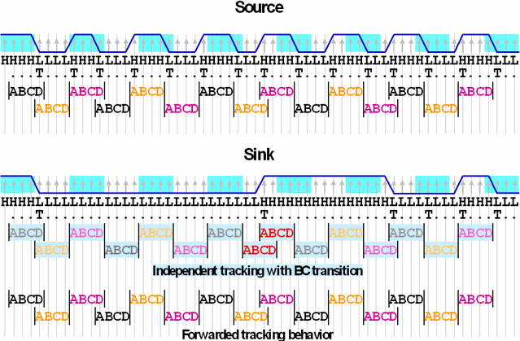

Forwarding the clock
Suppose that all data transitions at the output pins of a source synchronous device are expected to occur at multiples of an UI. Suppose further that the output clock and the output data exhibit the same moderate common drift. Since this is acceptable, the device should pass a protocol engine test if no other errors occur.
Now a central feature of the tracking mechanism is that it adjusts the observation window when it recognizes a drift in the output data. But it can recognize a drift only by a transition within the current window; if no transition occurs, the next window will not be adjusted. Therefore, if no transitions occur over a longer stretch of UI's, several small, acceptable deviations may be accumulated in such a way that the test reports an error although the device should pass.
For the little scenario above, this means that tracking the drift of the output clock should present no problem, because the clock signal is periodic and can be expected to supply a transition with every UI. But the data signals can be steady for a considerable period of time, and therefore the tracker may come to wrong conclusions if it bases its adjustment decisions on an analysis of this signal.
The clock forwarding feature of the protocol engine allows you to circumvent this problem by transferring the adjustments made for the output clock to the data pins. The tracking of the data signals will then be based on the tracking of the output clock, and not on an analysis of the data signals themselves. The pin whose tracking information is transferred is called the source, the pin to which it is passed is called the sink.
Clock forwarding is configured in a clock forwarding set, which is defined with the CFDF and CFCF commands. Clock forwarding is activated by defining a primary clock forwarding set with CFPR. In order to inactivate clock forwarding again, issue CFPR "".
Related Test Method APIs
Example
In order to simplify the graphics, the following examples illustrate the operation mode by 1 UI observation windows. But note that in the actual implementation, the observation window actually consists of 3 UI (= 12 samples); see Drift and transition tracking.

This example shows how an independent analysis of the signal of the sink (indicated by the light blue coloring) would lead to a fatal BC transition (jump by 2) in the 8th observation window (marked by red font). The reason for this is that two 1/4 UI shifts to the left are accumulated to a 1/2 UI shift to the left due to the stretch of 26 L's.
It is assumed that the 9th window (marked by red font) starts at sample C of the current window (it could also start two samples after the current window). For more details on BC transitions see Drift and transition tracking.
By using the tracking information of the source, the signal can be analyzed correctly.
Functional changes
- Introduced in SmarTest 7.0.1